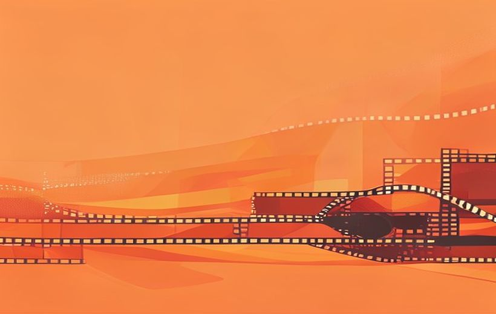

Plano, encuadre, montaje, ritmo… La gramática básica con la que se cuenta cualquier historia en imágenes, desde un anuncio de 30 segundos hasta una película de 3 horas.
El lenguaje audiovisual: contar con imágenes y sonido.
El lenguaje audiovisual es la gramática invisible del cine y la publicidad: cada plano, cada corte y cada sonido tienen una razón de ser — no se pone nada por casualidad.
🧠 Los conceptos
Despliega cada tarjeta, léela con calma y márcala como entendida. La barra de arriba irá subiendo.
Son dos cosas distintas pero inseparables:
Un ejemplo rápido: en el anuncio Lamp de Spike Jonze para IKEA, la narrativa es que se tira una lámpara vieja a la calle; el lenguaje son los primeros planos, la música triste y la lluvia que te hacen sentir pena por un objeto inanimado.
Narrativa vs. Lenguaje — definición literal del PDF: «Narrativa: es la historia (qué contamos). Lenguaje: es cómo la contamos (técnica)». Es la formulación exacta que hay que dar en el examen.
Storyboard (la planificación) — dentro del mismo bloque de Fundamentos, el PDF lo define como «un guion gráfico compuesto por ilustraciones en viñetas que explican visualmente las secuencias antes del rodaje». Ayuda a visualizar las ideas de forma unificada, garantiza la coherencia narrativa y permite decidir qué mostrar (selección) y qué sugerir antes de encender la cámara.
La Selección — el PDF lo resume así: «Narrar es seleccionar (y excluir)». Y añade: «la clave no reside únicamente en mostrar, sino en seleccionar, encuadrar, organizar y jerarquizar lo que se presenta al espectador, de forma que la imagen comunique».
Lema del PDF: «Narrar es seleccionar (y excluir)». Cada plano debe tener intención narrativa: todo lo que no aporta significado, emoción o avance dramático se elimina.
La clave no reside únicamente en mostrar, sino en seleccionar, encuadrar, organizar y jerarquizar lo que se presenta al espectador, de forma que la imagen comunique.
La Selección — «narrar es seleccionar (y excluir)»; «cada plano debe tener intención narrativa. Todo lo que no aporta significado, emoción o avance dramático se elimina». Economía Visual — «un objeto dice más que mil palabras»: «contar mucho con muy poco». Fuera de Campo — «lo que no se ve es más potente que lo explícito»; el PDF lo conecta con la Historia Invisible: «creamos toda una narrativa con una imagen».
El PDF clasifica el encuadre de tres maneras: por tamaño de plano, por angulación y por punto de vista. Esta tarjeta es la primera: el tamaño de plano.
Regla del PDF (Distancia = Emoción): «cuanto más cerca está la cámara, más emocional es la escena».
Tipos de plano y encuadre.
| Tipo de plano | Qué muestra | Para qué sirve |
|---|---|---|
| Gran Plano General (GPG) | Paisaje enorme, personaje diminuto | Contexto, inmensidad |
| Plano General (PG) | Muestra el entorno | Contexto, soledad, pequeñez del personaje (ej.: Lawrence of Arabia, el personaje diminuto en el desierto) |
| Plano Entero (PE) | Personaje de pies a cabeza | El cuerpo completo en la acción |
| Plano Americano (PA) | De rodillas hacia arriba | Personaje + algo de entorno |
| Plano Medio (PM) | De la cintura hacia arriba | Conversación natural |
| Plano Medio Corto (PMC) | Del pecho hacia arriba (entre el PM y el PP) | Acerca un paso más la emoción |
| Primer Plano (PP) | Se centra en el rostro | Emoción, intimidad, psicología (ej.: El silencio de los corderos, tensión extrema) |
| Primerísimo Primer Plano (PPP) | Solo cara, ojos a boca | Intensidad dramática extrema |
| Plano Detalle (PD) | Un objeto o parte del cuerpo | Significado simbólico |
Encuadre por tamaño de plano — el PDF clasifica los planos como un tipo de encuadre «por tamaño», bajo el lema «Distancia = Emoción»: «cuanto más cerca está la cámara, más emocional es la escena».
La escala completa del PDF (9 planos) — GPG, PG, PE, PA, PM, PMC, PP, PPP y PD. Ojo: el Plano Medio Corto (PMC) entra entre el PM y el PP — suele olvidarse y el PDF lo incluye expresamente.
El encuadre es decidir qué entra en la pantalla y —igual de importante— qué se queda fuera. Todo lo que está dentro del cuadro debe tener un significado. Si no aporta nada, se elimina.
La composición es cómo organizamos los elementos para guiar la mirada del espectador. Tú decides hacia dónde va a mirar.
Principios básicos de composición:
| Principio | Qué es | Qué transmite |
|---|---|---|
| Regla de los tercios | Dividir la imagen en cuadrícula 3×3. Los elementos importantes van en las intersecciones. | Imagen natural y atractiva, evita centrar todo |
| Headroom (aire superior) | Espacio entre la cabeza y el borde superior del plano. | Mucho aire = soledad, vulnerabilidad |
| Lookroom (aire de mirada) | Espacio hacia donde mira el personaje. | Dirección narrativa, expectativa |
| Líneas de fuga | Líneas reales o imaginarias de la escena (carreteras, pasillos, vías de tren, edificios…) que conducen visualmente hacia un punto. | Son «un camino visual»: guían la mirada hacia el protagonista o un elemento clave |
Además, la angulación de la cámara cambia el significado:
| Angulación | Qué hace al personaje |
|---|---|
| Cenital | Vista aérea «de pájaro», directamente desde arriba. |
| Picado (desde arriba) | Hace al personaje más débil, vulnerable, inferior. |
| Contrapicado (desde abajo) | Lo vuelve poderoso, dominante, amenazante (ej.: Batman en El Caballero Oscuro, figura imponente). |
| Nadir | El opuesto al cenital: la cámara, perpendicular al cielo, mira hacia arriba desde el suelo. |
| Holandés (aberrante) | Cámara inclinada lateralmente (entre 25 y 45 grados) respecto al horizonte. Transmite inestabilidad, tensión, desequilibrio mental o caos. |
El Encuadre — definición textual del PDF: «es la selección de la realidad. Decidir qué entra en la pantalla y, lo más importante, qué se queda fuera». La Composición es «cómo organizamos los elementos para guiar la mirada del espectador», y el PDF la llama también «la arquitectura de la imagen». Lema del tema: «Mirar es seleccionar. Narrar es ordenar». Al headroom/lookroom el PDF los agrupa como El Aire: «el espacio vacío que se deja alrededor de un personaje dentro del encuadre».
Fuera de Campo — concepto de Fundamentos ligado al encuadre: «lo que no se ve es más potente que lo explícito». El PDF lo conecta con la «Historia Invisible»: crear toda una narrativa con una sola imagen.
Las tres clasificaciones del encuadre — el PDF distingue el encuadre por tamaño de plano (tarjeta anterior), por angulación (esta tabla) y por punto de vista (siguiente tarjeta).
La tercera clasificación del encuadre del PDF. Indica desde dónde se mira la acción: ¿la cámara es un observador neutral o son los ojos de alguien (o de algo)?
| Punto de vista | Qué es | Efecto / ejemplo |
|---|---|---|
| Objetivo | La cámara actúa como un observador invisible y omnisciente: no pertenece a la mirada de ningún personaje, registra la acción de forma neutral. | Sensación de realidad; el espectador entiende el contexto. |
| Subjetivo (POV) | La cámara se sitúa exactamente en los ojos del personaje, mostrando lo que él ve. | Inmersión, identificación, tensión. Ej. clásico: Halloween, la cámara adopta la mirada del asesino — inquietud inmediata. |
| Subjetivo voyerista | Muestra la visión de un personaje que observa a otro de forma oculta o indiscreta. | A menudo incluye una cerradura, unos binoculares o se mira entre arbustos. |
| Semisubjetivo (de acompañamiento) | La cámara va muy cerca del personaje (detrás de su hombro o cabeza): vemos parte de él y lo que él ve al mismo tiempo. | «Acompañamos» al personaje en la acción. |
| Punto de vista de objeto | Un plano subjetivo donde la cámara «es» un objeto inanimado. | Ej.: la vista desde el interior de un refrigerador o desde el fondo de una maleta. |
| Plano de Percepción | Refleja no solo lo que el personaje ve, sino cómo lo ve debido a su estado psicológico o físico. | Visión borrosa, distorsionada por drogas, cambios de color. |
Encuadre por punto de vista — «indica desde dónde se mira la acción». Definiciones textuales: Subjetivo (POV) = «la cámara se sitúa exactamente en los ojos del personaje, mostrando lo que él ve»; Subjetivo Voyerista = «muestra la visión de un personaje que observa a otro de forma oculta o indiscreta»; Semisubjetivo (o de acompañamiento) = «la cámara se sitúa muy cerca del personaje (a menudo detrás de su hombro o cabeza)»; Objetivo = «la cámara actúa como un observador invisible y omnisciente»; Punto de vista de objeto = «un plano subjetivo donde la cámara "es" un objeto inanimado»; Plano de Percepción = «refleja no solo lo que el personaje ve, sino cómo lo ve debido a su estado psicológico o físico».
El montaje es, según el PDF, «cómo se ordenan los planos». El orden que eliges convierte una colección de planos en una historia con sentido.

El montaje da ritmo y sentido a la historia.
Tipos de montaje:
| Tipo | Cómo funciona | Efecto |
|---|---|---|
| Lineal (continuo) | La acción sigue un orden cronológico lógico A→B→C. Es el «invisible», el clásico de Hollywood. Se usa en el 90% de las películas y anuncios. | Claridad narrativa (ej.: Top Gun: Maverick — regreso → entrenamiento → preparación → misión final) |
| Invertido (discontinuo) | Se rompe la cronología temporal: flashback (vuelta al pasado) o flashforward (salto al futuro, premonición). | Lógica temporal alterada (ej.: El curioso caso de Benjamin Button — nace anciano y rejuvenece, vive su vida al contrario) |
| Alterno (cross-cutting) | Dos o más acciones que ocurren al mismo tiempo en lugares distintos y que van a converger (se van a cruzar). | Genera SUSPENSE (ej.: El Padrino, escena del bautizo: dentro de la iglesia Michael renuncia al mal, fuera sus hombres ejecutan asesinatos) |
| Paralelo | Dos o más historias que ocurren (simultáneamente o no) pero que NUNCA se cruzan físicamente. Se montan juntas para que el espectador compare situaciones. | Genera REFLEXIÓN o CONTRASTE (ej.: The Dark Knight — los dos ferris del Joker, civiles y prisioneros) |
Montaje — el PDF lo define escuetamente: «cómo se ordenan los planos». El Montaje Lineal (Continuo) es aquel donde «la acción sigue un orden cronológico lógico (A-B-C); es el "invisible", el clásico de Hollywood», usado en «el 90% de las películas y anuncios».
Montaje Invertido (Discontinuo) — «se rompe la cronología temporal»: Flashback = «vuelta al pasado (recordar la infancia)»; Flashforward = «salto al futuro (premonición)».
Montaje Alterno (Cross-Cutting) — «intercalar dos o más acciones que ocurren simultáneamente en distintos lugares para crear tensión dramática»; la clave: «genera SUSPENSE». El Montaje Paralelo son «dos o más historias que ocurren (simultáneamente o no) pero que NUNCA se cruzan físicamente»; la clave: «genera REFLEXIÓN o CONTRASTE».
El ritmo NO es solo la velocidad de los cortes. Es la combinación de dos factores:
La elipsis es la herramienta del ritmo narrativo: se eliminan los tiempos muertos. No vemos al personaje dormir 8 horas ni conducir 30 minutos — se salta directamente a lo relevante.
| Tipo de elipsis | Qué hace |
|---|---|
| Elipsis estructural | Oculta partes de la historia para generar misterio (no vemos quién mata a la víctima). |
| Elipsis de contenido | Elimina acciones mecánicas irrelevantes para la trama. |
El Ritmo — el PDF lo define como «duración y contenido de un plano» y subraya: «el ritmo NO es solo velocidad de edición; es la combinación de dos factores». Ritmo Externo: «determinado por la duración de los planos» (corte rápido <2 seg = tensión, acción, caos o euforia; corte largo / plano secuencia = realismo, inmersión o incomodidad). Ritmo Interno: «lo que ocurre dentro del encuadre».
Elipsis — definición textual: «es la supresión técnica de los tiempos muertos o irrelevantes de una historia». El PDF la presenta como economía narrativa. Tipos: Elipsis Estructural («ocultar partes de la historia para generar misterio») y Elipsis de Contenido («eliminar acciones mecánicas»).
La luz en el cine y la publicidad no solo ilumina: cuenta cosas. Es un recurso narrativo que transmite emociones, define personajes y orienta la interpretación del espectador. No vemos solo lo que está iluminado; entendemos por qué está iluminado.
| Tipo de luz | Características | Qué comunica |
|---|---|---|
| Luz dura | Directa, sin difusores. Sombras negras y muy definidas. | Verdad, crudeza, drama, misterio, agresividad. |
| Luz suave | Difusa, «envuelve» al objeto. Sombras degradadas, casi invisibles. | Belleza, inocencia, ensoñación, seguridad. |
| Luz lateral | Ilumina solo la mitad del rostro. | Dualidad, conflicto interno, personajes complejos. |
| Contraluz | Fuente de luz detrás del sujeto. Crea silueta. | Secreto, poder, aislamiento. |
| Luz alta / brillante | Iluminación general, uniforme. | Seguridad, normalidad, honestidad. Típica de comedia y publicidad. |
| Luz baja / contrastada | Pocas fuentes de luz, mucho contraste. | Misterio, peligro, tensión. Típica del thriller o cine negro. |
La Luz como narrativa — formulación textual del PDF: «la luz en la narrativa audiovisual no solo ilumina: cuenta cosas. Es un recurso narrativo que transmite emociones, define personajes y orienta la interpretación del espectador». Y la frase clave: «no vemos solo lo que está iluminado; entendemos por qué está iluminado».
Luz dura — «luz directa, sin difusores (sol o foco directo). Produce sombras muy negras y bordes muy definidos». Luz suave — «luz difusa que "envuelve" al objeto. Las sombras son degradadas, casi invisibles». Ejemplo del PDF: en El Padrino, los rostros parcialmente en sombra cuentan ambigüedad moral, poder, secretos y autoridad: «la iluminación construye la psicología del personaje».
El sonido no es un fondo pasivo: es un componente activo que define el tono de la historia. Tiene cinco capas:
| Capa | Qué es | Para qué sirve |
|---|---|---|
| Diálogo | Lo que dicen los personajes. | No es solo el texto; el subtexto (cómo lo dicen) dice más. |
| Sonido ambiente | El «room tone», el fondo sonoro del lugar. | Da realismo y contextualiza el espacio. |
| Efectos sonoros (FX / Foley) | Sonidos añadidos en postproducción. | Dirigen la mirada y refuerzan la acción. |
| Música | Banda sonora, leitmotivs. | Dicta qué debemos sentir. La música manda. |
| Silencio | Ausencia de sonido. | Genera pausa, tensión o expectativa. |
La relación entre imagen y sonido puede ser:
El sonido como recurso narrativo — formulación del PDF: «el sonido no es un acompañamiento pasivo (un "fondo"); es un componente activo que define el tono de la historia». Las capas oficiales: Diálogo («texto vs. subtexto: no es solo qué dicen, sino cómo lo dicen»), Sonido Ambiente (el «"Room Tone" o tono de sala; es lo que da realismo»), Efectos Sonoros (FX / Foley) («no solo rellenan, sino que dirigen la mirada»), Música («¿qué debemos sentir? La música manda») y Silencio («aporta pausa y tensión»).
Sincronía y Contrapunto — términos exactos del PDF: Síncrono = «lo que oigo encaja con lo que veo (realismo)»; Asíncrono (Contrapunto) = «el sonido contradice a la imagen».
Cine para Oídos — término extra del PDF: «una forma de narración en la que la historia se construye principalmente a través del sonido, de modo que el espectador podría entender gran parte del relato solo escuchándolo, incluso sin ver la imagen» (ejemplo: The Conversation).
El lenguaje audiovisual trabaja con tres herramientas simbólicas:
Psicología del color: el cerebro procesa el color antes que la forma o el texto. Los colores se usan en paletas calculadas, nunca al azar:
| Color | Temperatura | Qué transmite |
|---|---|---|
| Rojo | Cálido | Pasión, peligro, urgencia. Muy usado en call to action. |
| Naranja | Cálido | Energía vital, creatividad. Menos agresivo que el rojo. |
| Amarillo | Cálido | Alegría, optimismo, advertencia. |
| Azul | Frío | Confianza, calma, tecnología, soledad. |
| Verde | Frío | Naturaleza, salud, crecimiento. |
| Morado / violeta | Frío | Lujo, fantasía, misterio, espiritualidad. |
| Negro | Neutro | Elegancia, poder, muerte. |
| Blanco | Neutro | Pureza, simplicidad, vacío. |
Símbolos vs. Metáforas — definiciones textuales: Símbolo = «un objeto concreto que adquiere un significado profundo por repetición o contexto» (una escalera = superación/progreso). Metáfora Visual = «relación poética entre dos imágenes para explicar un concepto abstracto» (una vela apagándose = el fin de una vida). El PDF añade la Analogía: «establecer una semejanza entre dos conceptos diferentes para facilitar la comprensión» (las escaleras de Parásitos representan la diferencia de clases).
La Acumulación y el Símbolo Sonoro (Leitmotiv) — «un símbolo gana fuerza si se repite a lo largo de la obra (evoluciona con la trama)»; el Símbolo Sonoro (Leitmotiv) es «un sonido o melodía recurrente asociado a un personaje o situación» (las dos notas de Tiburón).
Psicología del Color — «el color es emoción»: «la herramienta más rápida para llegar al subconsciente; el cerebro procesa el color antes que la forma o el texto». Por temperatura: «Cálidos (Expandir): acercan el objeto, aceleran (deseo, hambre, alerta). Fríos (Contraer): alejan el objeto, bajan las pulsaciones (confianza, tristeza, tecnología)». Y en cine y publicidad «no se usan colores al azar; se diseñan Paletas».
«Todo suma» — fórmula de cierre del PDF: «IMAGEN (captura la mirada) + SONIDO (envuelve la emoción) + RITMO (guía la atención) + SÍMBOLO (profundiza el mensaje) = EXPERIENCIA MEMORABLE».
📖 Vocabulario del examen
Cómo lo digo fácil → cómo lo llama el PDF (y como saldrá en el examen).
| En fácil | Término oficial del PDF |
|---|---|
| La historia (qué contamos) | Narrativa |
| La técnica (cómo lo contamos) | Lenguaje (audiovisual) |
| Decidir qué entra en pantalla y qué se queda fuera | El Encuadre — «la selección de la realidad» |
| Lo que no se ve (y por eso es más potente) | Fuera de Campo — «historia invisible» |
| Aire sobre la cabeza / hacia donde mira | El Aire: Headroom / Lookroom |
| Guion gráfico en viñetas, antes del rodaje | Storyboard — «la planificación» |
| El plano entre el Plano Medio y el Primer Plano | Plano Medio Corto (PMC) |
| La cámara en los ojos del personaje | Subjetivo (POV) |
| La cámara espía oculta (cerradura, binoculares) | Subjetivo Voyerista |
| Vemos el hombro del personaje y lo que él ve | Semisubjetivo (de acompañamiento) |
| Vemos borroso porque el personaje está drogado/mareado | Plano de Percepción |
| Contar mucho con muy poco (la pelota Wilson) | Economía Visual |
| Saltarse los tiempos muertos | Elipsis — «supresión técnica» (economía narrativa) |
| Velocidad de los cortes / movimiento dentro del plano | Ritmo Externo / Ritmo Interno |
| Dos acciones a la vez que van a cruzarse (suspense) | Montaje Alterno (Cross-Cutting) |
| Dos historias que nunca se cruzan (contraste) | Montaje Paralelo |
| El sonido contradice a la imagen | Asíncrono (Contrapunto) |
| Melodía recurrente de un personaje (Tiburón) | Símbolo Sonoro (Leitmotiv) |
🃏 Flashcards
Toca cada tarjeta para girarla. Tapa la definición con la mano y comprueba si te la sabes.
✅ Test rápido
6 preguntas tipo examen. Elige una opción y te corrige al momento con la explicación.
⭐ Preguntas de autoevaluación
La presentación de este tema no incluía diapositivas de autoevaluación. Se incluyen a continuación 3 preguntas de práctica al nivel del examen, con respuesta completa.